Bản dựng tham chiếu: Subdock Glass App.dc.html — khung 390×844, theme Glass. Ảnh chụp trong tài liệu này lấy trực tiếp từ bản dựng đó, đúng pixel, không vẽ lại.
Khi có khác biệt giữa mô tả chữ và ảnh chụp: ảnh chụp là đúng. Khi có khác biệt giữa ảnh chụp và file dựng: file dựng là đúng.
| Token | Giá trị |
|---|---|
| Nền màn hình | linear-gradient(160deg, #dfe6f6 0%, #eef0f4 42%, #f6ece6 74%, #e3edf1 100%) — gradient tĩnh, không cuộn theo nội dung |
| Card / surface | rgba(255,255,255,.55) + backdrop-filter: blur(14px) + viền 1px rgba(255,255,255,.75) |
| Elevation | Không dùng drop shadow trên card. Độ nổi đến từ trong suốt + viền trắng. Chỉ khung máy có shadow: 0 22px 60px rgba(24,34,58,.16) |
| Bo góc | Card 15px · chip/nút nhỏ 9px · tile icon 9px (34×34) · khung máy 42px |
| Accent | oklch(.55 .13 262) ≈ #4a6ac6 — nút chính, tab active, chip đang chọn, link, cột chart. Chữ trên accent: #fff |
| Chữ | Chính #1b2230 · phụ rgba(27,34,48,.62) · mờ rgba(27,34,48,.5) |
| Đường kẻ | rgba(27,34,48,.10) — chỉ dùng bên trong card, không dùng để chia list |
| Cảnh báo | oklch(.52 .21 26). Nền hàng overdue = danger 10% trộn trên surface, viền = danger 32% |
| Tab bar | Nền rgba(255,255,255,.62) + blur, viền trên 0 -1px 0 rgba(255,255,255,.7) |
| Chip tắt | rgba(255,255,255,.55) + viền rgba(255,255,255,.75). Chip bật = nền accent, chữ trắng |
| Font | Be Vietnam Pro (đủ dấu tiếng Việt) · IBM Plex Mono cho ngày, giờ, số tiền phụ. Icon: Material Symbols Rounded, nét (FILL 0), tab active dùng bản tô đặc |
Thang chữ: title màn 34/600, tracking -.02em · section title 24/600 · tên item và body 17/500 · dòng phụ 14/400 · nhãn uppercase 12.5/600 tracking .1em.
Spacing: padding ngang màn 18px · card padding 13–14px · khoảng cách giữa các hàng trong nhóm 10px · nhãn nhóm cách nhóm trên 28px, cách hàng dưới 10px · nội dung cách tab bar 18px.
Ảnh chụp ở 390×844, mật độ 1×. Phần dưới màn hình có cuộn tiếp; ảnh chụp là trạng thái mặc định khi mở màn.
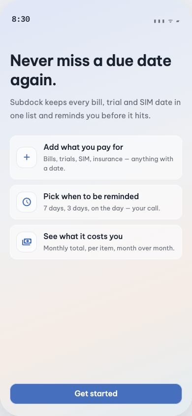
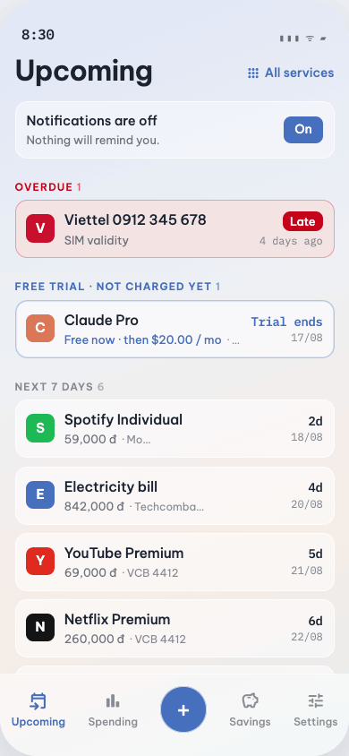
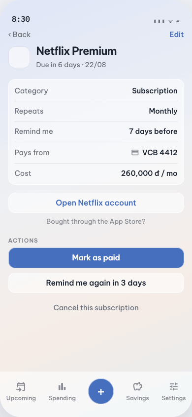
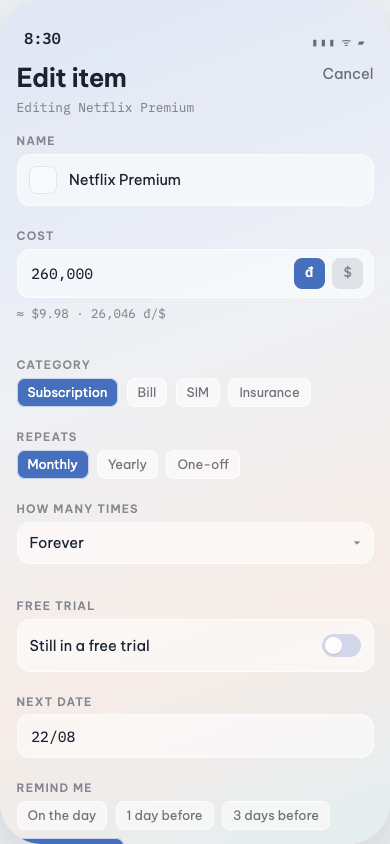
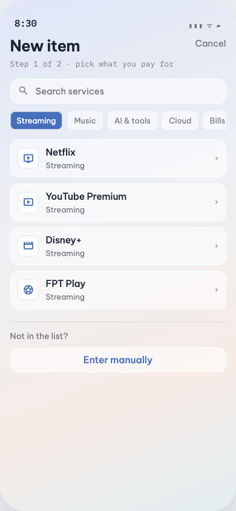
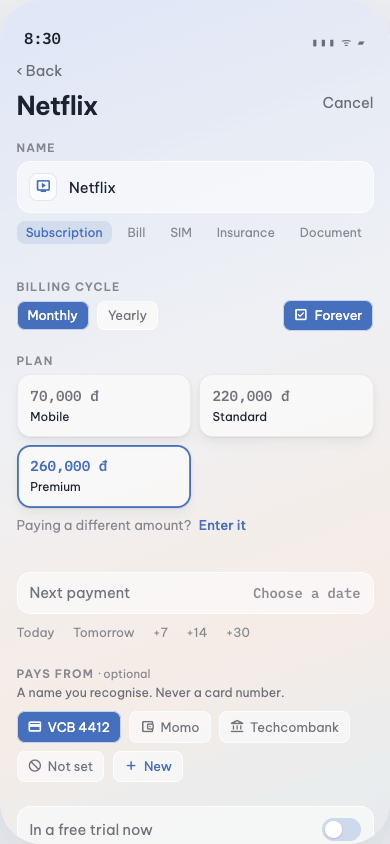
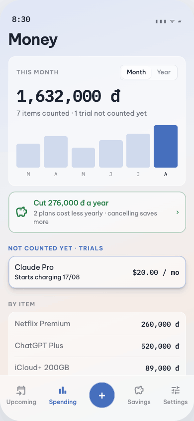
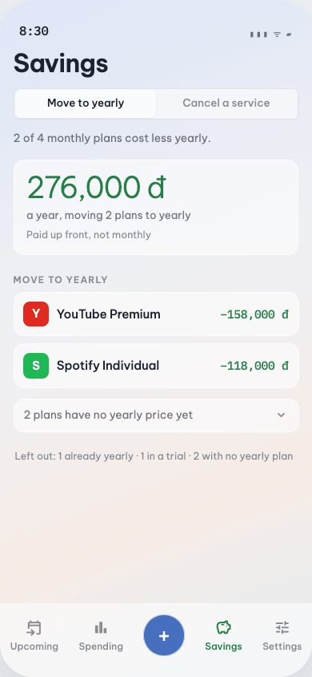
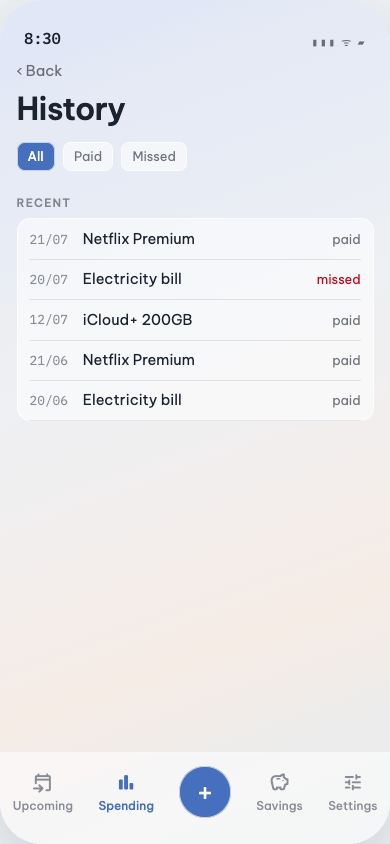
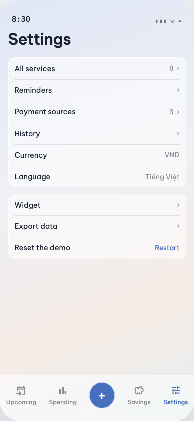
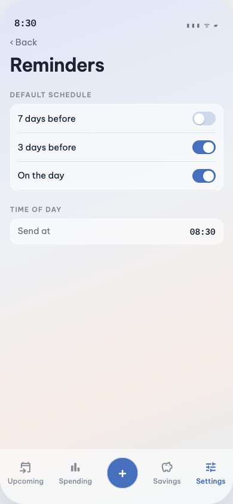
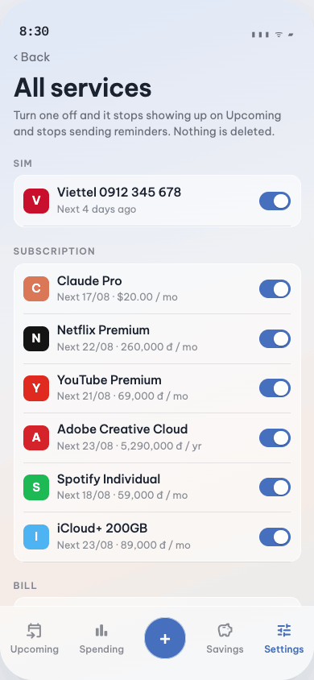
Mỗi mốc ngày là một item độc lập. Không có nhóm nhiều mốc trong một đối tượng, không có xử lý riêng cho SIM.
| Trường | Giá trị |
|---|---|
| name | Bắt buộc. Gõ tự do, có gợi ý dịch vụ phổ biến. |
| icon | Tự detect theo tên. Không khớp thì dùng chữ cái đầu trên tile màu. |
| category | Subscription · Bill · SIM · Insurance · Document |
| date | Preset 1-chạm: Today · Tomorrow · +7 · +14 · +30 · chọn ngày. |
| repeat | Monthly · Yearly · One-off |
| cycles | Forever hoặc giới hạn số lần / đến một ngày. Item có giới hạn hiển thị tiến độ. |
| cost | Số + đơn vị chọn ở cuối field: đ (mặc định) hoặc $. |
| source | Tuỳ chọn. Tên gợi nhớ, không bao giờ là số thẻ. |
| trial | Cờ dùng thử + ngày hết hạn. Item trial nằm nhóm riêng, giá hiển thị “Free now · then …”. |
| remind | On the day · 1 day · 3 days (mặc định) · 7 days before. |